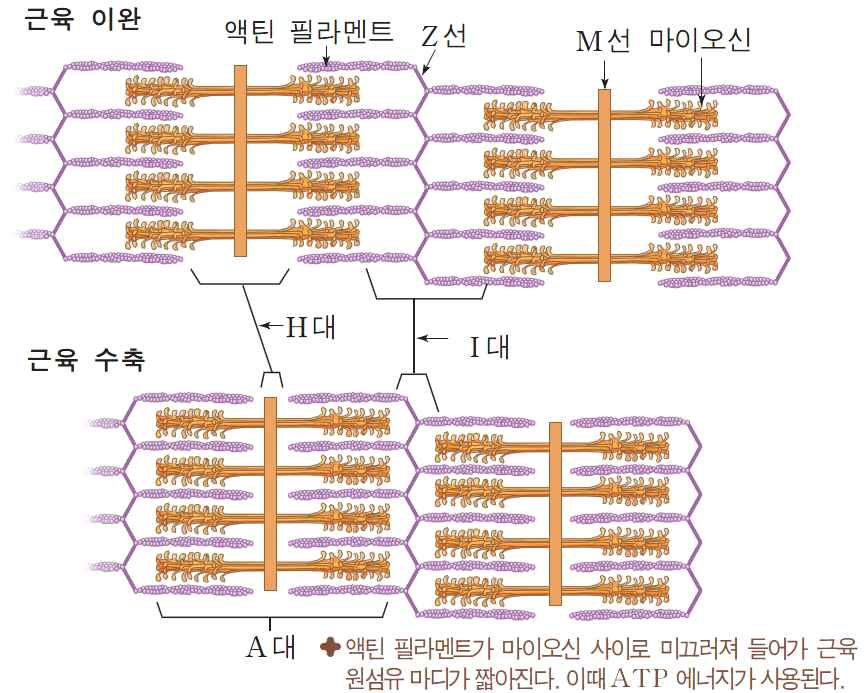
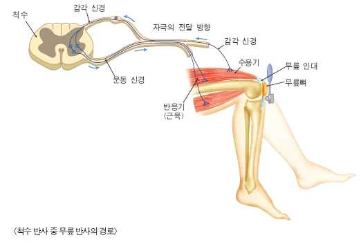
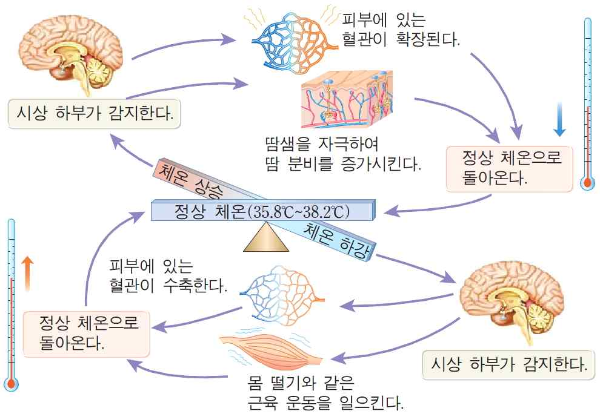

해설 4
4-1
(가) (1) 몸의 움직임은 신경계의 명령에 따른 근육의 움직임에 의한 것이며, 이는 골격근의 수축과 이완에 의한 것이다. 이는 운동 뉴런으로부터 근육으로의 흥분이 전달되어 근육 원섬유 내 액틴과 마이오신의 상호작용을 통해 일어난다. 골격근은 굵은 마이오신과 가느다란 액틴 필라멘트로 구성되며, 근육 수축 과정은 다음과 같다.
- 활동 전위가 운동신경 말단에 도달
- 시냅스 소포를 통한 신경전달물질(아세틸콜린)을 통해 시냅스 후 근육 섬유로 전달
- 아세틸콜린이 근육 섬유막으로 확산되면 근육 섬유막이 탈분극되어 활동전위 발생
- 액틴 필라멘트가 굵은 마이오신의 중심 쪽으로 미끄러지듯이 끌려들어가 근육 원섬유의 마디가 짧아짐
- 이 때 ATP 에너지가 사용됨

(2) 근육 운동과 같은 신체 움직임은 대뇌의 판단과 명령에 따라 일어나는 의식적인 행동이다. 반면, 반사 행동은 감각 신경을 통해 전달된 자극이 척수에서 바로 운동 신경으로 전달되어 나타난다. 즉, 반사 행동의 중추는 척수이며, 대뇌가 관여하지 않는 무의식 행동이다.

4-2
(나) 격렬한 운동 등으로 인해 체온이 높아지면 시상 하부의 체온 조절 중추에 자극이 전달되어 피부의 모세혈관과 입모근을 이완시키고 땀 분비를 촉진하여 몸 표면을 통한 열 방출을 늘려 체온을 내린다. 또한 물질 대사를 억제하여 열 생산을 줄인다. 체온이 적정 온도에 이르면 체온 조절 중추는 체온을 낮추는 조절 신호를 더 이상 보내지 않는다.
